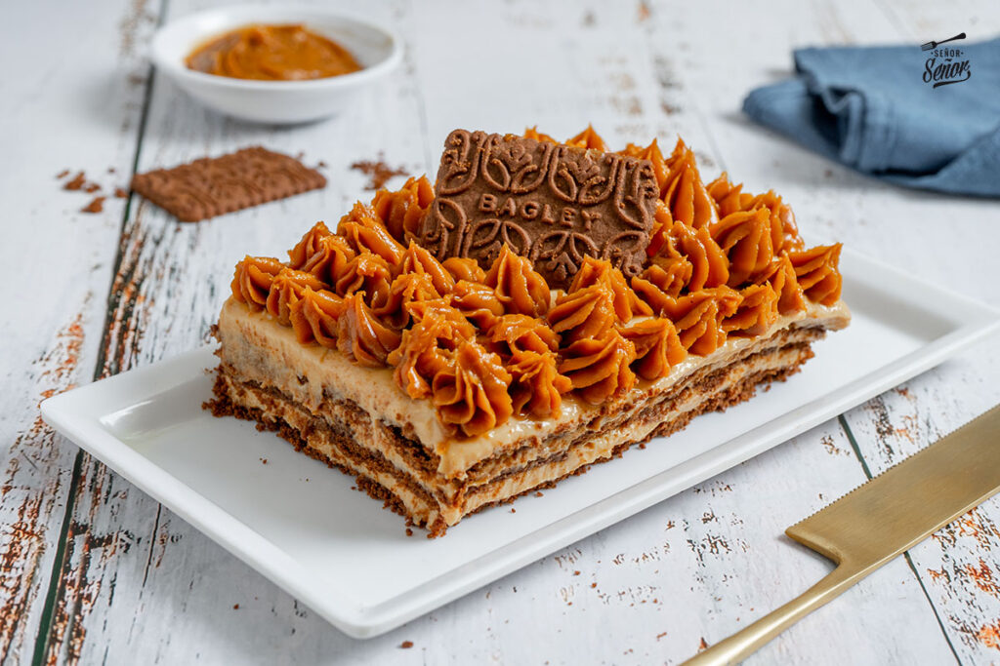

¿Que es la chocotorta?

La Chocotorta es un postre tradicional de Argentina hecho sin necesidad de horno, famoso por su sencillez y su delicioso sabor a chocolate y dulce de leche.
Nació en Argentina en 1982 como una creación de la publicista Marité Mabragaña para una campaña de marketing.
Ingredientes
- Galletitas de chocolate Chocolinas.
- 500 g o 600 g de dulce de leche repostero.
- 400 g o 500 g de queso crema (tipo Casancrem)
- 400 ml de leche chocolatada, leche sola o café suave para remojar las galletitas.
Preparación
Para preparar esta torta de la manera correcta, seguir los pasos del siguiente video de YouTube
Click acá para ver el tutorial